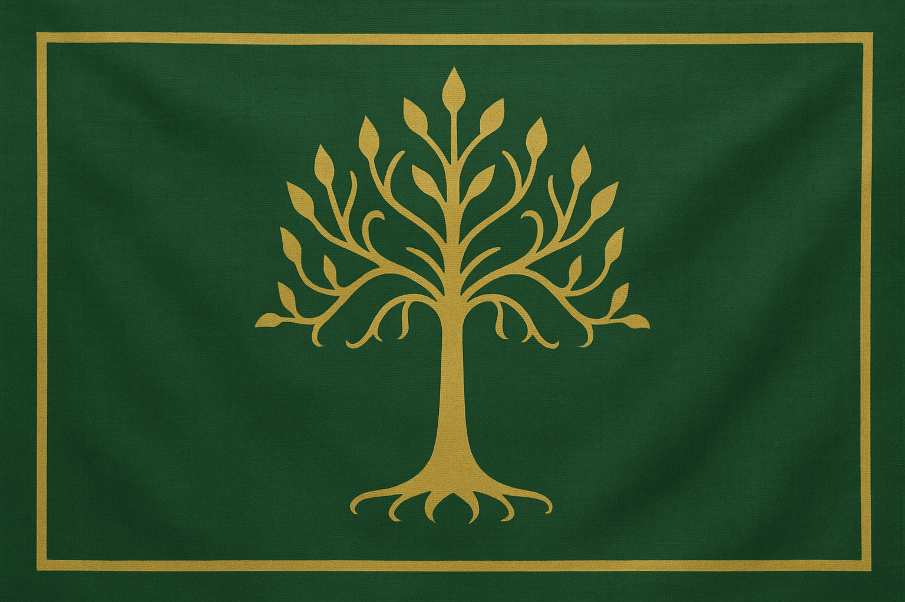
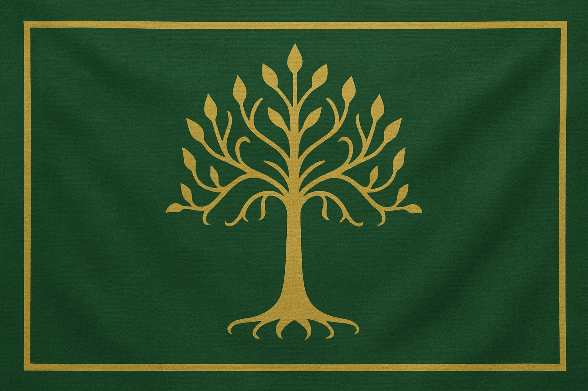

Welcome to the world of the Dwarven people !
 

Dwarves are a sturdy and proud people living beneath the mountains. They are known throughout Middle-earth for the legendary quality of their craftsmanship. Their main activities are extracting ore from the heart of the mountains and forging tools or weapons. Industrious people, Dwarves are great builders who shape their mines in their own image, turning them into vast forges. Bold and fearless, they do not hesitate to hurl themselves into the fray to cut down goblins or orcs with mighty swings of their axes. Dwarves are also great beer drinkers and love spending the night feasting in taverns with friends.
Non-exhaustive list
| 8:00 AM | Wake-up |
| 9:00 AM | Descent into the mine |
| 12:00 PM | Lunch and beer |
| 1:00 PM | Back to the mine |
| 4:00 PM | Beer break |
| 4:30 PM | Fight with goblins |
| 7:00 PM | Metal refining |
| 10:00 PM | Beer break |
| 12:00 AM | Sleep |